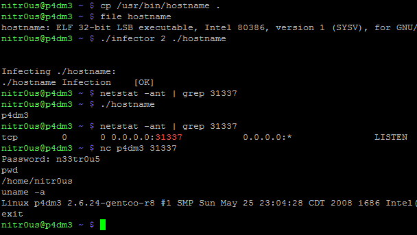

By Alejandro Hernández @nitr0usmx
Day by day the endless
fight between the bad guys and good guys mostly depends on how fast a
countermeasure or anti-reversing protection can be broken. These anti-reversing
mechanisms can be used by attackers in a number of ways: to create malware, to be used in precompiled zero-day exploits in the black market, to hinder forensic analysis, and so on. But they can also be used by software companies or developers that want to protect the internal logic of their software products (copyright).
The other day I was
thinking: why run and hide (implementing anti-reversing techniques such as the
aforementioned) instead of standing up straight and give the debugger a punch in the
face (crashing the debugging application). In the next paragraphs I’ll explain
briefly how I could implement this anti-reversing technique on ELF binaries
using a counterattack approach.
ELF executables are the
equivalent to the .exe files in Windows systems, but in UNIX-based systems
(such as Linux and *BSD). As an executable file format, there are many
documented reversing [1] and anti-reversing techniques on ELF binaries, such as
the use of the ptrace() syscall for
dynamic anti-debugging [2]:
void anti_debug(void) __attribute__
((constructor));
void anti_debug(void)
{
if(ptrace(PTRACE_TRACEME, 0, 0, 0) == -1){
printf("Debugging
not allowed!\n");
exit(0xdead);
}
}
Trying to debug with
GNU debugger (the most famous and commonly used debugger in UNIX-based systems)
an ELF executable that contains the above code will result in:

However, as can be seen, even with the anti-debugging technique at runtime, the ELF file was completely loaded and parsed by the debugger.
The ELF files contain different
data structures, such as section headers, program headers, debugging
information, and so on. So the Linux ELF loader and other third party
applications know how to build their layout in memory and execute/analyze them.
However, these third party applications, such as debuggers, sometimes *TRUST*
on the metadata of the supplied ELF file to be analyzed, and here is where the
fun begins.
I found one bug in GNU
gdb 7.5.1 and another one in IDA Pro 6.3 (the latest versions when this paper
was written), using Frixyon fuzzer (my ELF file format fuzzer still in
development). To explain these little bugs that crash the debuggers, we’ll use
the following code (evil.c):
#include <stdio.h>
int main()
{
printf("It could be a malicious program }:)\n");
return 0;
}
Crashing GNU gdb 7.5.1
Compiling this with gcc
using the –ggdb flag, the resulting
ELF file will have section headers with debugging-related information:

After a bit of analysis,
I found a bug in the DWARF [3] (a debugging file format used by many compilers
and debuggers to support source-level debugging) processor that fails when parsing
the data within the .debug_line section. This prevents gdb from loading an ELF
executable for debugging due to a NULL pointer dereference. Evidently it could
be used to patch malicious executables (such as rootkits, zero-day exploits, and
malware) that wouldn’t be able to be analyzed by gdb.
In
gdb-7.5.1/gdb/dwarf2read.c is the following data structure:
struct line_header
{
...
unsigned int num_include_dirs, include_dirs_size;
char
**include_dirs;
...
struct file_entry
{
char *name;
unsigned int dir_index;
unsigned int mod_time;
unsigned int length;
...
}
*file_names;
}
The problem exists when
trying to open a malformed ELF that contains a file_entry.dir_index > 0 and char
**include_dirs pointing to NULL.
To identify the bug, I did something called inception
debugging: to debug gdb with gdb:

The root cause of the
problem is that there's no validation to verify if include_dirs is different from NULL
before referencing it.
To simplify this
process, I’ve developed a tool to patch the ELF executable given as an argument,
gdb_751_elf_shield.c:

After patching a binary
with this code, it will be completely executable since the operating system ELF
loader only uses the Program Headers (not the Section Headers). But, it wouldn’t
be able to be loaded by gdb as shown below:

Timeline:
12/11/2012 The bug was found on GNU gdb 7.5.
19/11/2012 The bug was reported through the official
GNU gdb’s bug tracker:
http://sourceware.org/bugzilla/show_bug.cgi?id=14855
http://sourceware.org/bugzilla/show_bug.cgi?id=14855
10/12/2012 Retested with the latest release (7.5.1),
which still has the bug.
12/12/2012 The status on the tracker is still “NEW”.
Crashing IDA Pro 6.3
The IDA Pro ELF loader
warns you when it finds invalid or malformed headers or fields, and asks if you
want to continue with the disassembly process. However, there’s a specific
combination of fields that makes IDA Pro enter an unrecoverable state and closes
itself completely, which shouldn’t happen.
The aforementioned
fields are found in the ELF headers, e_shstrndx
and e_shnum, where the first one is
an index of the Section Header Table with e_shnum
elements. So IDA will fail if e_shstrndx
> e_shnum because there is no validation to verify both values before
referencing it.
The following
screenshot illustrates the unrecoverable error:

I have also programmed a simple tool (ida_63_elf_shield.c) to patch the ELF
executables to make them impossible for IDA Pro to load. This code only
generates two random numbers and assigns the bigger one to e_shstrndx:
srand(time(NULL)); // seed for rand()
new_shnum = (Elf32_Half) rand()
% 0x1337;
new_shstrndx = (Elf32_Half) 0;
while(new_shstrndx < new_shnum)
new_shstrndx = (Elf32_Half) rand() %
0xDEAD;
header->e_shnum = new_shnum;
header->e_shstrndx = new_shstrndx;
After
patching a file, IDA will open a pop-up window saying that an error has occurred
and after clicking the OK button, IDA will close:

Timeline:
21/11/2012 The bug was found on IDA Demo 6.3.
22/11/2012 The bug was tested on IDA Pro 6.3.120531
(32-bit).
22/11/2012 The bug was reported through the official Hex-Rays
contact emails.
23/11/2012 Hex-Rays replied and agreed that the bug
leads to an unrecoverable state and will be fixed in the next release.
A real life scenario
Finally, to illustrate that
neither patching tool will corrupt the integrity of the ELF files at execution,
I will insert a parasite code to an ELF executable using Silvio Cesare’s
algorithm [4], patching the entrypoint to a “fork() + portbind(31337) + auth(Password: n33tr0u5)” payload [5],
which at the end has a jump to the original entrypoint:


As can be seen, the original binary (hostname) works perfectly after executing the parasite code (backdoor on port 31337). Now, let’s see what happens after patching it:

It worked perfectly and
evidently it cannot be loaded by gdb !
In conclusion, the
debuggers have certain parsing tasks and are software too, therefore they are
also prone to bugs and security flaws. Debugging tools shouldn’t blindly trust
in the data input supplied, in this case, the metadata of an ELF executable
file. Always perform bound checking before trying to access invalid memory
areas that might crash our applications.
Thanks for reading.
Alejandro.
Tools
- gdb (GNU debugger)
<= 7.5.1 (crash due a NULL pointer dereference)
ELF
anti-debugging/reversing patcher
https://github.com/IOActive/FileFormatFuzzing/blob/master/ELFAntiDebuggingTools/gdb_751_elf_shield.c
- IDA Pro 6.3 (crash
due an internal error)
ELF
anti-debugging/reversing patcher
References
[1] Reverse Engineering
under Linux by Diego Bauche Madero
[2] Abusing .CTORS and
.DTORS for fun 'n profit by Itzik
Kotler
[3] DWARF
[4] UNIX Viruses by
Silvio Cesare
[5] ELF_data_infector.c
by Alejandro Hernández
Manipulation of section headers (e.g e_shnum) as an anti-debugging trick has been known for at least a decade (IIRC first described in bugtraq?).
ReplyDeleteAFAIK, section headers are unused at execution time, so contained information is only useful for debugging purposes.
qué chingón hallazgo, nunca pensé que en el debug info se pudiera hacer algo
ReplyDeletey qué mejor que un antidebugging tronando el debugger aprovechandote de un null pointer en el mismo.
Un trabajo de gran nivel, a tu nivel.
Saludos bro
La única cosa sería que si valgrindeas podrías encontrar el null pointer sin usar GDB o IDA (supongo... no lo probé) y podrías hacer un "repatch" que escribiera dir_index = 0 (con tu mismo código en C)
ReplyDeleteTal vez este bug hubiera funcionado mejor siendo 0day y cifrando las instrucciones que cargan DWARF opcode por opcode :)
pero aún así creo que esto es verdadero research.
Un saludo otra vez bro
Hey, How are going on?
ReplyDeleteI feel so good to read your article of. Because here included so effective information about of article Striking Back GDB and IDA debuggers through malformed ELF executables . It may help me about related matter. I highly recommend it & like to share Click-n-earn Get Compensated Banner advertising and view websites, Get Compensated To Enhance, Buy Cost-effective Banner Promotion PTC Promotion Email promotion, Cost-effective ad Promotion, Cost-effective PTC Promotion, Generate Cash On the internet, ways to make online, Get Compensated For Website Hits work from home USA And More. Try It Out Today!
Thanks For Only You Create That cute Article.
One neat little way to obfuscate an ELF executable, in a very trivial way, but not always so obvious in reversing, is to randomize the .symstrtabl and .dynstrtabl arrays. Also randomizing the string table for the section headers (Although to a seasoned ELF person, this would be obvious).
ReplyDeleteI was recently asked by pakt to author a book on Reverse engineering in Linux. I'd love to get together and chat sometime.
Home Lifestyle has a wide range of One Stop Home Essentials products suited for the Active, Busy, Mobile and City Living People, bringing the Quality of Life to a different level.
ReplyDelete